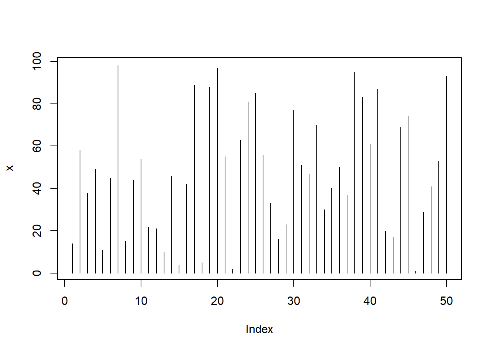
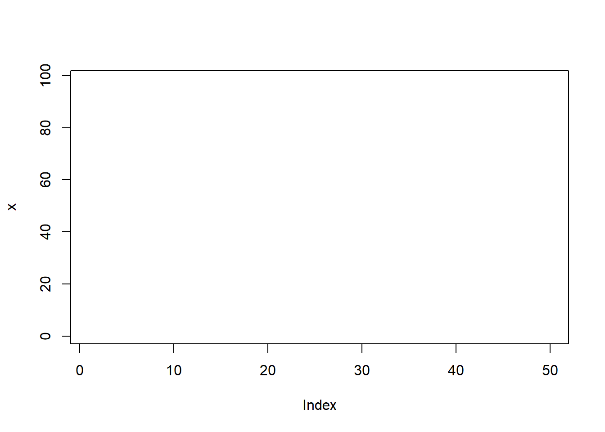
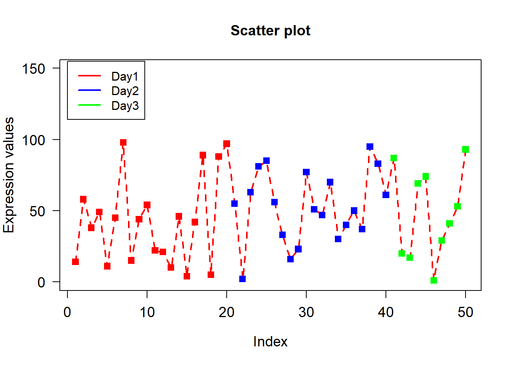
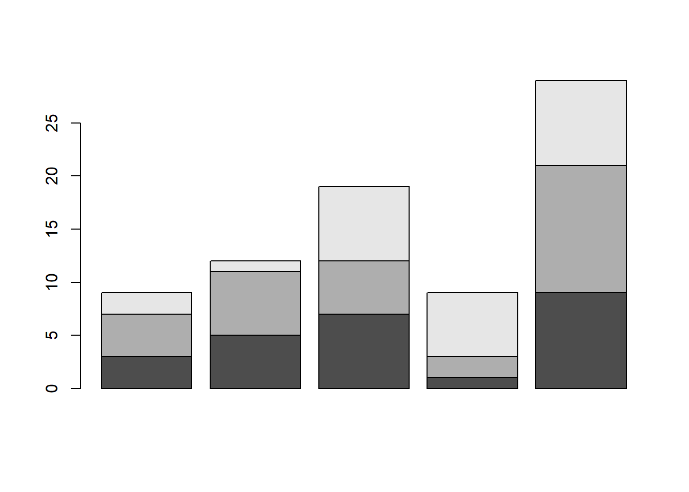
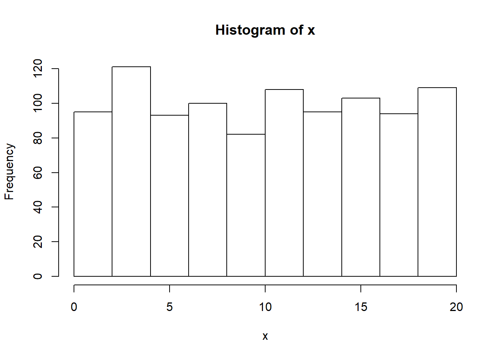
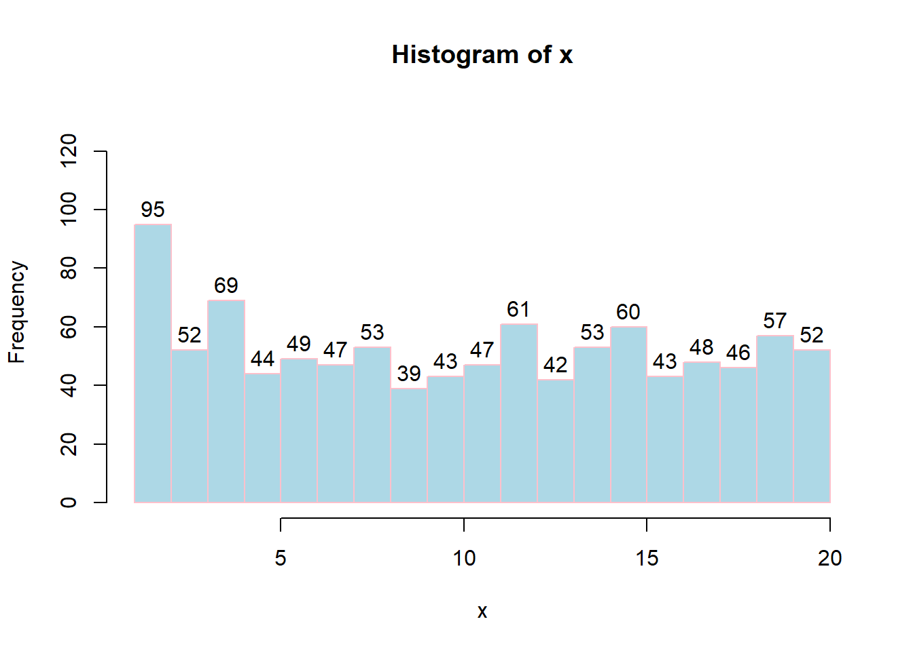
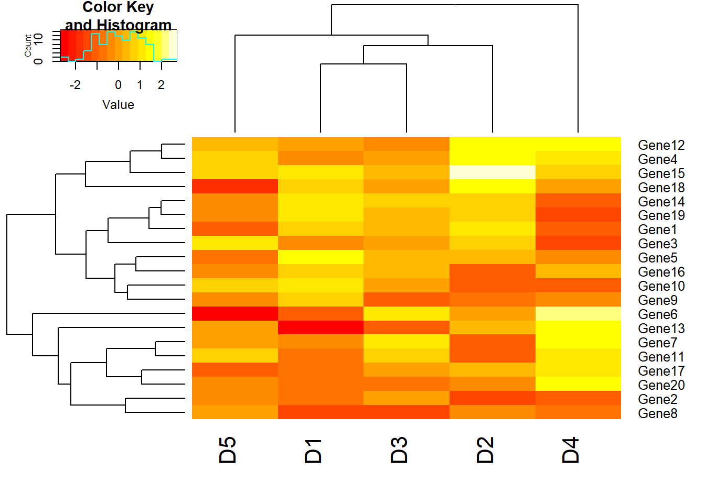
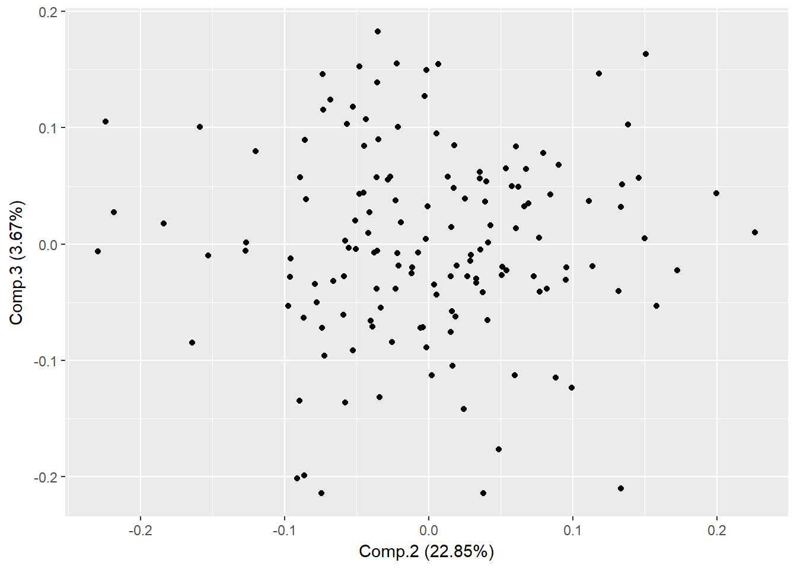

Data Visualization using R
Author: Team BioSakshat
Copyright: BioSakshat
Last update: June 2017
Lets Begin
R has high-level and low-level plotting functions.
Simple scatter plot
x=sample(x = 100, size = 50); # Create a vector x, 50 elements, values between 0 and 100
plot(x); # Plot the value of x against the indexplot(x, type="l"); # type: line
plot(x, type="o"); # type: overplotted (point and line)plot(x, type="h"); # type: histogram like
plot(x, type="s"); # type: stair stepsplot(x, type="n"); # type: no plotting
Saving plot
Steps: Create a graphics device (BMP, JPEG, PNG, TIFF) then plot and switch off the device.
# File will be saved in current working directory getwd()
png(filename = "myplot.png", width = 480, height = 480, units = "px" , type="cairo");
plot(x, type="l");
dev.off();## png
## 2Add title/subtitle/x-axis label/y-axis label to plot
Increase line thickness
# Parameters: lwd
plot(x, type="l", xlab = "Index", ylab = "Expression values", main= "Scatter plot", lwd = 2);Assign color to lines and points
# Parameters: col
plot(x, type="o", xlab = "Index", ylab = "Expression values", main= "Scatter plot", lwd = 2, col = "red");# There are 50 elements in x. so 50 points in plot.
# col=c(“red”,”green”,”blue”) is a vector of 3 elements which will be recycled to color the 50 points.
# So points will look like alternate red/green/blue.
plot(x, type="o", xlab = "Index", ylab = "Expression values", main= "Scatter plot", lwd = 2, col = c("red","green","blue"));# length(x) is 50. col=rainbow(length(x)) will generate 50 consecutive colors which will be assigned to 50 points on the plot.
plot(x, type="o", xlab = "Index", ylab = "Expression values", main= "Scatter plot", lwd = 2, col = rainbow(length(x)));# Lets display first 20 points as red, next 20 as blue and last 10 as green. Create a vector of colors where red is repeated 20 times followed by blue 20 times and green 10 times.
# Using c() and rep() function we created veccol vector
# col=veccol assigns 50 colors of veccol vector to 50 points on the plot.
veccol=c(rep("red",20),rep("blue",20),rep("green",10));
plot(x, type="o", xlab = "Index", ylab = "Expression values", main= "Scatter plot", lwd = 2, col = veccol);Explore built-in colors
head(colors(), 50) # Explore default colors, 50 displayed## [1] "white" "aliceblue" "antiquewhite" "antiquewhite1"
## [5] "antiquewhite2" "antiquewhite3" "antiquewhite4" "aquamarine"
## [9] "aquamarine1" "aquamarine2" "aquamarine3" "aquamarine4"
## [13] "azure" "azure1" "azure2" "azure3"
## [17] "azure4" "beige" "bisque" "bisque1"
## [21] "bisque2" "bisque3" "bisque4" "black"
## [25] "blanchedalmond" "blue" "blue1" "blue2"
## [29] "blue3" "blue4" "blueviolet" "brown"
## [33] "brown1" "brown2" "brown3" "brown4"
## [37] "burlywood" "burlywood1" "burlywood2" "burlywood3"
## [41] "burlywood4" "cadetblue" "cadetblue1" "cadetblue2"
## [45] "cadetblue3" "cadetblue4" "chartreuse" "chartreuse1"
## [49] "chartreuse2" "chartreuse3"# colors() will list all colorsUsing c() and rep() function we created veccol
vector## function (mode = "logical", length = 0L)
## .Internal(vector(mode, length))
## <bytecode: 0x02e9734c>
## <environment: namespace:base>rainbow(5); # Create a vector of 5 contiguous colors.## [1] "#FF0000FF" "#CCFF00FF" "#00FF66FF" "#0066FFFF" "#CC00FFFF"Explore different symbols
# Parameter: pch
# Try ?pch to explore more about points.
plot(x, type="o", xlab = "Index", ylab = "Expression values", main= "Scatter plot", lwd = 2, col = veccol, pch = 15);Explore different line types
# Parameter: lty
# Try other lty values (0=blank, 1=solid (default), 2=dashed, 3=dotted, 4=dotdash, 5=longdash, 6=twodash)
plot(x, type="o", xlab = "Index", ylab = "Expression values", main= "Scatter plot", lwd = 2, col = veccol, pch = 15, lty=2);Rescale the x-axis and y-axis
# Parameter: xlim, ylim.
# xlim and ylim parameters are used to change the default x and y axis ranges.
# We have to give the minimum and maximum values of x and y-axis.
# xlim=c(0,100) will scale x-axis from 0 to 100.
plot(x, type="o", xlab = "Index", ylab = "Expression values", main= "Scatter plot", lwd = 2, col = veccol, pch = 15, lty=2, xlim=c(0,100), ylim=c(0,150));Magnification of labels and symbols
# Parameter: cex.lab, cex.axis, cex.main, cex.sub, cex
# cex.lab=1.5 will magnify the x-axis and y-axis labels by 50%.
# Default cex.lab=1
# cex.axis=1.2 magnifies the labels on the tick-marks of axis.
# cex.main=1.2 magnifies the title
# cex.sub=1.2 magnifies the subtitle.
# cex=1.2 magnifies the symbol/text on the plots
plot(x, type="o", xlab = "Index", ylab = "Expression values", main= "Scatter plot", lwd = 2, col = veccol, pch = 15, lty=2, cex.lab=1.2, cex.axis=1.2, cex= 1.2, cex.main=1.2);Explore bty (box type)
# bty=”n” will not draw box around the plot.
# If bty is one of "o" (the default), "l", "7", "c", "u", or "]" the resulting box resembles the corresponding upper case letter.
plot(x, type="o", xlab = "Index", ylab = "Expression values", main= "Scatter plot", lwd = 2, col = veccol, pch = 15, lty=2, cex.lab=1.2, cex.axis=1.2, cex= 1.2, cex.main=1.2, bty="n");Explore las (style of axis labels)
# Style of axis tick mark labels is given by las=1.
# 0: parallel to axis, 1: always horizontal, 2: always perpendicular to axis, 3: always vertical)
plot(x, type="o", xlab = "Index", ylab = "Expression values", main= "Scatter plot", lwd = 2, col = veccol, pch = 15, lty=2, cex.lab=1.2, cex.axis=1.2, cex= 1.2, cex.main=1.2, las = 1);Explore col.axis, col.lab, col.main, col.sub parameters
# col.axis=”red” will color the axis labels on the tick marks to red color
# col.lab=”brown” will color the x-axis and y-axis labels to brown.
plot(x, type="o", xlab = "Index", ylab = "Expression values", main= "Scatter plot", lwd = 2, col = veccol, pch = 15, lty=2, cex.lab=1.2, cex.axis=1.2, cex= 1.2, cex.main=1.2, las = 1, col.axis = "red", col.lab = "blue", col.main = "pink", col.sub = "brown");Low level plotting functions (lines)
lines() draws lines on a plot. To draw lines we need x and y coordinates of points. The syntax: pass x- coordinates of all points as 1st argument and all y- coordinates as 2nd argument. lty and lwd can alsoplot(x, type=“o”, xlab = “Index”, ylab = “Expression values”, main= “Scatter plot”, lwd = 2, col = veccol, pch = 15, lty=2, cex.lab=1.2, cex.axis=1.2, cex= 1.2, cex.main=1.2, las = 1, ylim=c(0,150));
be used.
# First call high level plotting function
plot(x, type="o", xlab = "Index", ylab = "Expression values", main= "Scatter plot", lwd = 2, col = veccol, pch = 15, lty=2, cex.lab=1.2, cex.axis=1.2, cex= 1.2, cex.main=1.2, las = 1, ylim=c(0,150));
# Call low level plotting functions which will be applied on the plot generated above.
lines(c(0,60),c(50,50), lty=2, col="red", lwd=2);
lines(c(-10,60),c(100,100), lty=2, col="blue",lwd=2);
Low level plotting functions (legend)
legend() draws legends on a plot. To draw legend we need to specify where to draw legend by specifying x and y coordinates as 1st and 2nd argument. The legends to be written as 3rd argument. Colors of legends are passed by col parameter while lwd sets line width.
plot(x, type="o", xlab = "Index", ylab = "Expression values", main= "Scatter plot", lwd = 2, col = veccol, pch = 15, lty=2, cex.lab=1.2, cex.axis=1.2, cex= 1.2, cex.main=1.2, las = 1, ylim=c(0,150));
legend(0,155,c("Day1","Day2","Day3"), lwd=2, col=c("red","blue","green"))
Adding texts to existing plot (text)
text() adds texts to existing plots. To add text, we need x- and y- coordinates which we pass as 1st and 2nd arguments respectively. Third argument (labels) is the texts that are to be written on the plot. Since we want to write the values of x on the points, the x and y coordinates of text will be exactly same as the points i.e. x-coordinates will be 1 to 50 while y coordinates will be value of x itself. The text to be added will also be x.
plot(x, type="o", xlab = "Index", ylab = "Expression values", main= "Scatter plot", lwd = 2, col = veccol, pch = 15, lty=2, cex.lab=1.2, cex.axis=1.2, cex= 1.2, cex.main=1.2, las = 1, ylim=c(0,150));
text(1:50,x,labels=x);pos=3 will add the text on the top of point. pos=1/2/3/4 means below/left/top/right to point
cex=0.6 decrease the text size.
plot(x, type="o", xlab = "Index", ylab = "Expression values", main= "Scatter plot", lwd = 2, col = veccol, pch = 15, lty=2, cex.lab=1.2, cex.axis=1.2, cex= 1.2, cex.main=1.2, las = 1, ylim=c(0,150));
text(1:50,x,labels=x, pos=3, cex=0.6);Offset is usedbarplot(A, names.arg = c(“Day1”,“Day2”,“Day3”,“Day4”,“Day5”), xlab=“Days”, ylab=“Revenue”, border=“red”); to put space between point and text.
plot(x, type="o", xlab = "Index", ylab = "Expression values", main= "Scatter plot", lwd = 2, col = veccol, pch = 15, lty=2, cex.lab=1.2, cex.axis=1.2, cex= 1.2, cex.main=1.2, las = 1, ylim=c(0,150));
text(1:50,x,labels=x, pos=3, cex=0.6, offset = 0.8);Explore Line Plot
Create 3 vectors x1, x2, x3 with 50 elements with different range values. To visualize x1, x2 and x3 as lines, we need to first draw x1 using high-level plot() command then x2 and x3 can be drawn using low-level lines() command by adding lines to the already existing plots.
Below code plot 3-lines but we can’t see x2 and x3 lines since the plot(x1) will plot using x1 whose y-axis margin lies between 0-50 but x2 values between 50-100 and x3 between 100-150. So x2 and x3 will be out-of margin on the plot.
x1=sample(1:50, 50);
x2=sample(50:100, 50);
x3=sample(100:150, 50);
plot(x1, type= "l", lty = 2);
lines(x2, lty = 2, col="red");
lines(x3, lty = 2, col = "blue");To correctly see x2 and x3, we fi{#morelines}rst set the ylim to 0-200
plot(x1, type= "l", lty = 2, ylim=c(0,200));
lines(x2, lty = 2, col="red");
lines(x3, lty = 2, col = "blue");Explore simple Bar plot
Barplot: Here x can be considered as heights of bars in a bar plot.
x=c(3, 2, 6, 8, 4);
barplot(x);# Using names.arg=c() we can name the bars.
# border=”red” will give red border to bars.
barplot(x, names.arg = c("Day1","Day2","Day3","Day4","Day5"), border = "red", xlab="Days", ylab="Revenue");# horiz=TRUE will make horizontal bar plot. Note: xlab and ylab need to be changed accordingly.
barplot(x, names.arg = c("Day1","Day2","Day3","Day4","Day5"), border = "red", horiz = TRUE, xlab="Revenue", ylab="Days");Explore stacked bar plot
When argument to barplot() is a matrix, a stacked bar plot will be generated.
# Create a matrix
A <- matrix(c(3,5,7,1,9,4,6,5,2,12,2,1,7,6,8), nrow=3, byrow = TRUE);
print(A);## [,1] [,2] [,3] [,4] [,5]
## [1,] 3 5 7 1 9
## [2,] 4 6 5 2 12
## [3,] 2 1 7 6 8barplot(A);
# Using names.arg assign name to each bar
barplot(A, names.arg = c("Day1","Day2","Day3","Day4","Day5"), xlab="Days", ylab="Revenue", border="red");# col parameter to color each stack.
barplot(A, names.arg = c("Day1","Day2","Day3","Day4","Day5"), xlab="Days", ylab="Revenue", border="red", col=c("red","green","blue"));
# Add legend (Note on using pch in legend)
legend(x=0.2, y=24,c("High","Mid","Low"), pch = 15, col=c("red","blue","green"))Grouped Bar plots
The argument beside=TRUE will convert stacked to grouped bar plot
space=c(0.1, 1) specifies to add 0.1 spacing between bars and spacing of 1 between each groups.
barplot(A, names.arg = c("Day1","Day2","Day3","Day4","Day5"), xlab="Days", ylab="Revenue", border="red", col=c("red","green","blue"), beside = TRUE, space = c(0.1, 1));Histogram
x=sample(20,1000, replace = TRUE);
hist(x);
# labels=TRUE will add label on the bars.
# col will fill the bars with colors
# border is to give border color of bar.
hist(x, labels = TRUE, col = "lightblue", border="pink",ylim=c(0,130));
# Breaks=20 will assign number of histogram bins to 20.
hist(x, labels = TRUE, col = "lightblue", border="pink",ylim=c(0,130), breaks = 20);
# Freq=FALSE will plot probability instead of frequency. Note: Probaility lies between 0 to 1. So we have to change ylim accordingly.
hist(x, labels = FALSE, col = "lightblue", border="pink",ylim=c(0,0.2), breaks = 20, freq = FALSE);Density plot
density(x) function computes kernel density estimates of x which is plotted by plot(density(x)).
plot(density(x), xlab="Value", ylab="Probability density of x", cex.lab=1.2, cex.axis=1.2);Plot density plot of two distributions
x and y are two distributions whose density are estimated using density(x) and density(y).
x=sample(20,1000, replace = TRUE);
y=sample(50:100,1000, replace = TRUE);
# Plot density of x and y. Since the x-ranges of x and y are different (x values between 0-20 while y between 50 and 100), we can’t see distribution of y in this plot.
plot(density(x));
lines(density(y));
# Change xlim between 0 and 100 so that both x and y densities are within plot-margin.
plot(density(x), xlim = c(0,120), xlab="Value", ylab="Probability density", main="Probability density of x and y");
lines(density(y),col="red");
legend(100, 0.05, c("x","y"), col=c("black","red"), lwd=5)Box plots
Create a matrix of 1000*4 dimensions. Let’s assume that these are the gene expression values of 1000 genes measured across two days among control and treatment sample. Columns represents: Control-Day1, Control-Day2, Treatment-Day1 and Treatment-Day2.
x1=sample(1:100,1000, replace = TRUE);
x2=sample(100:200,1000, replace = TRUE);
x3=sample(200:300,1000, replace = TRUE);
x4=sample(300:400,1000, replace = TRUE);
m=cbind(x1,x2,x3,x4)
head(m);## x1 x2 x3 x4
## [1,] 14 150 277 384
## [2,] 53 108 229 321
## [3,] 66 122 296 325
## [4,] 74 141 273 332
## [5,] 10 167 235 328
## [6,] 52 197 211 366boxplot(m);# col parameters sets colors to each box.
boxplot(m, col=c("red","blue","red","blue"),xlab="Day",ylab="Expression")# names parameter sets names below each box.
boxplot(m, col=c("red","blue","red","blue"),xlab="Day",ylab="Expression", names= c("Day1","Day2","Day1","Day2"));
legend(0.5, 400, c("Control","Treatment"), col=c("red","blue"), pch =15)Pie chart
x=c(70, 15, 5);
pie(x); # 1st argument is the proportion values# col assigns colors to each category
pie(x, col=c("red","green","blue"));# labels will assign labels to each category
pie(x, col=c("red","green","blue"), labels = x);
legend(0.97, 0.92, c("High","Mid","Low"), pch=15,col=c("red","green","blue") )Venn diagram
library(gplots);## Warning: package 'gplots' was built under R version 3.3.3##
## Attaching package: 'gplots'## The following object is masked from 'package:stats':
##
## lowessx1=1:5
x2=4:6
x3=c(4, 8:10);
x4=c(7,5,10);
x5=c(7, 10);
v1=venn(list(x1, x2, x3));v2=venn(list(x1, x2, x3, x4));v3=venn(list(x1, x2, x3, x4, x5));Heatmap
m1 = read.table("_site/data/Day2/GenExp_heatmap.txt",sep="\t", header=TRUE);
rownames(m1)=m1$Gene;
m1$Gene=NULL;
m1=as.matrix(m1); # Convert data.frame to matrix
head(m1);## D1 D2 D3 D4 D5
## Gene1 0.59 1.01 0.36 -1.25 -1.11
## Gene2 -0.76 -1.42 -0.09 -0.93 -0.45
## Gene3 -0.37 0.76 0.06 -1.31 0.94
## Gene4 -0.19 1.59 -0.15 1.01 0.74
## Gene5 1.45 0.26 0.46 -0.30 -0.59
## Gene6 -1.24 -0.14 1.15 2.16 -2.72library(gplots);
heatmap.2(m1);# Disable trace. trace=”none” will prevent to draw tract of color key.
heatmap.2(m1, trace = "none");
# Disable column clustering. Colv=FALSE will prevent the ordering of column as per hierarchical clustering. So the dendrogram won’t be displayed. Rowv=FALSE will prevent clustering of rows.
heatmap.2(m1, trace = "none", Colv = FALSE);## Warning in heatmap.2(m1, trace = "none", Colv = FALSE): Discrepancy: Colv
## is FALSE, while dendrogram is `both'. Omitting column dendogram.# Disable row clustering
heatmap.2(m1, trace = "none", Rowv = FALSE);## Warning in heatmap.2(m1, trace = "none", Rowv = FALSE): Discrepancy: Rowv
## is FALSE, while dendrogram is `both'. Omitting row dendogram.# Data scaling
heatmap.2(m1, trace = "none", scale = "row");# Add cellnote. notecex: magnification for cell note. cellnote=m will allow us to write the values of matrix m in each cell. notecol=”black” will set the color of notes in each cell as black.
heatmap.2(m1, trace = "none", scale = "row", cellnote = m1, notecol = "black", notecex=0.8);# col parameter
heatmap.2(m1, trace = "none", scale = "row", col=redgreen(75));# Custom colors
library(RColorBrewer)## Warning: package 'RColorBrewer' was built under R version 3.3.2my_palette <- colorRampPalette(c("blue","white","red"))(n = 149)
heatmap.2(m1, trace = "none", scale = "row", col=my_palette);The argument (n = 149) lets us define how many individuals colors we want to have in our palette. Obviously, the higher the number of individual colors, the smoother the transition will be; the number 149 should be sufficiently large enough for a smooth transition. By default, RColorBrewer will divide the colors evenly so that every color in our palette will be an interval of individual colors of similar size. However, sometimes we want to have a little skewed color range depending on the data we are analyzing. Our example dataset (m1) ranges from –3 to 3, and we are particularly interested in samples that have a (relatively) high expression: R values in the range between 2 to 3 and -2 to -3. In this case, we can define our color breaks “unevenly” by using the following code:
# Color breaks
col_breaks = c(seq(-3,-2,length=50), # for red
seq(-1.9,2,length=50), # for yellow
seq(2.1,3,length=50)) # for green
heatmap.2(m1, trace = "none", col=my_palette, breaks = col_breaks);## Warning in image.default(z = matrix(z, ncol = 1), col = col, breaks =
## tmpbreaks, : unsorted 'breaks' will be sorted before use# Adjust Row and column label size using cexRow and cexCol parameter
heatmap.2(m1, trace = "none", col=my_palette, breaks = col_breaks, cexRow=0.5,cexCol=0.75);## Warning in image.default(z = matrix(z, ncol = 1), col = col, breaks =
## tmpbreaks, : unsorted 'breaks' will be sorted before use# Categorize genes (Rows) into category, red and blue.
heatmap.2(m1, trace = "none", col=my_palette, breaks = col_breaks, RowSideColors = c(rep("red",10),rep("blue",10)));## Warning in image.default(z = matrix(z, ncol = 1), col = col, breaks =
## tmpbreaks, : unsorted 'breaks' will be sorted before uselegend("topright", # location of the legend on the heatmap plot
legend = c("category1", "category2"), # category labels
col = c("red", "blue"), # color key
lty= 1, # line style
lwd = 2 # line width
)# Explore
# labRow=NA: Disable row label
# key = TRUE: Disable color key panel
# density.info="none": disable density info in color key panelScatter plot Matrices
pairs() function is useful to draw a matrix of scatterplots. This is useful to get a global view of data distribution.
x1=sample(1:100, 30, replace = TRUE);
x2=sample(1:100, 30, replace = TRUE);
x3=sample(1:100, 30, replace = TRUE);
x4=sample(1:100, 30, replace = TRUE);
# m is a dataframe of dimension 30*4.
m=data.frame(x1,x2,x3,x4);
head(m);## x1 x2 x3 x4
## 1 2 38 91 39
## 2 96 58 10 88
## 3 2 42 95 21
## 4 31 11 62 90
## 5 12 75 30 44
## 6 85 64 55 18pairs(m);pairs(m, pch =16, col=rep(c("red","green","blue"), each=10));Ballon plot
library(gplots)
pathway = sample(c("P1","P2","P3"), 50, replace = TRUE)
genes = sample(c("Gene1","Gene2","Gene3","Gene4","Gene5"), 50, replace = TRUE);
tab <- table(pathway, genes);
print(tab);## genes
## pathway Gene1 Gene2 Gene3 Gene4 Gene5
## P1 3 2 4 4 5
## P2 3 6 2 2 5
## P3 2 3 4 2 3balloonplot(tab, main="Gene distributions in pathway");Multi panel plots
By setting the mfrow parameter in par() to number of rows and columns, multi-panel plots can be generated.
# we set the mfrow parameter to c(2,2) i.e. 2 rows and 2 columns and pass mfrow in par() function. par() after modifying the graphics parameter, returns original state of graphics device which we store in oldpar.
oldpar= par(mfrow=c(2,2));
x1=sample(1:100, 30, replace = TRUE);
x2=sample(1:100, 30, replace = TRUE);
x3=sample(1:100, 30, replace = TRUE);
x4=sample(1:100, 30, replace = TRUE);
# m is a dataframe of dimension 30*4.
m=data.frame(x1,x2,x3,x4);
hist(m[,1]);
hist(m[,2]);
hist(m[,3]);
hist(m[,4]);# Reset to old graphics setting
par(oldpar);PCA (Prinicipal Component Analysis)
head(iris);## Sepal.Length Sepal.Width Petal.Length Petal.Width Species
## 1 5.1 3.5 1.4 0.2 setosa
## 2 4.9 3.0 1.4 0.2 setosa
## 3 4.7 3.2 1.3 0.2 setosa
## 4 4.6 3.1 1.5 0.2 setosa
## 5 5.0 3.6 1.4 0.2 setosa
## 6 5.4 3.9 1.7 0.4 setosapiris=princomp(iris[,1:4], cor=TRUE, scores=TRUE);
# Summary of individual principal components
summary(piris);## Importance of components:
## Comp.1 Comp.2 Comp.3 Comp.4
## Standard deviation 1.7083611 0.9560494 0.38308860 0.143926497
## Proportion of Variance 0.7296245 0.2285076 0.03668922 0.005178709
## Cumulative Proportion 0.7296245 0.9581321 0.99482129 1.000000000# Shows a screeplot
plot(piris);# biplot
biplot(piris);Plot PCA objects using ggfortify pacakge
# Load ggfortify library
library(ggfortify);## Warning: package 'ggfortify' was built under R version 3.3.3## Loading required package: ggplot2## Warning: package 'ggplot2' was built under R version 3.3.3Plot PC1 vs PC2
autoplot(piris, x=1, y=2);Plot PC2 and PC3
autoplot(piris, x=2, y=3);
Draw Frame (draws convex for each cluster)
autoplot(piris, x=1, y=2, frame=TRUE);Pass original data for additional features
autoplot(piris, x=1, y=2, data=iris, colour='Species');Draw PCA loadings
autoplot(piris, x=1, y=2, data=iris, colour='Species', loadings = TRUE, loadings.label = TRUE, loadings.colour = 'blue', loadings.label.size = 3);Show frame
autoplot(piris, x=1, y=2, data=iris, frame=TRUE, colour='Species');autoplot(piris, x=1, y=2, data=iris, frame=TRUE, colour='Species', frame.type='t');Show Labels
autoplot(piris, x=1, y=2, data=iris, colour='Species', label=TRUE, label.size=3, shape=FALSE);Explore ggfortify package for further details. https://cran.r-project.org/web/packages/ggfortify/vignettes/plot_pca.html
Classical (Metric) Multidimensional Scaling
Multidimensional scaling takes a set of dissimilarities and returns a set of points such that the distances between the points are approximately equal to the dissimilarities.
m1 = read.table("_site/data/Day2/GenExp_heatmap.txt",sep="\t", header=TRUE);
rownames(m1)=m1$Gene;
m1$Gene=NULL;
m1=as.matrix(m1); # Convert data.frame to matrix
head(m1);## D1 D2 D3 D4 D5
## Gene1 0.59 1.01 0.36 -1.25 -1.11
## Gene2 -0.76 -1.42 -0.09 -0.93 -0.45
## Gene3 -0.37 0.76 0.06 -1.31 0.94
## Gene4 -0.19 1.59 -0.15 1.01 0.74
## Gene5 1.45 0.26 0.46 -0.30 -0.59
## Gene6 -1.24 -0.14 1.15 2.16 -2.72# Gene clustering
distmat = dist(m1, upper = TRUE, diag = TRUE);
cmd = cmdscale(distmat, k=2);
plot(cmd[,1], cmd[,2], type = "n", xlab = "Dim 1", ylab = "Dim 2", asp = 1, main = "cmdscale")
text(cmd[,1], cmd[,2], rownames(cmd), cex = 0.6);
# Sample clustering
distmat = dist(t(m1), upper = TRUE, diag = TRUE);
cmd = cmdscale(distmat, k=2);
plot(cmd[,1], cmd[,2], type = "n", xlab = "Dim 1", ylab = "Dim 2", asp = 1, main = "cmdscale")
text(cmd[,1], cmd[,2], rownames(cmd), cex = 0.6);Plotting K-means
# Using autoplot function of gfortify package
autoplot(kmeans(iris[,1:4], 3), data = iris);# 4 cluster
autoplot(kmeans(iris[,1:4], 4), data = iris);# Add label
autoplot(kmeans(iris[,1:4], 4), data = iris, label = TRUE, label.size=3, shape=FALSE);Dendrogram
# Pass distance matrix to hclust function
hc = hclust(dist(iris[,1:4]));
plot(hc, cex=0.5);# Cut the tree at h=2
# Convert hclust object to dendrogram object
plot(cut(as.dendrogram(hc), h =2)$upper, main = "Upper tree of cut at h=2")Explore https://rpubs.com/gaston/dendrograms for advanced plots.
Network graphs
library(igraph);## Warning: package 'igraph' was built under R version 3.3.3##
## Attaching package: 'igraph'## The following objects are masked from 'package:stats':
##
## decompose, spectrum## The following object is masked from 'package:base':
##
## uniondata=matrix(sample(0:1, 100, replace=TRUE), nc=10);
rownames(data) <- paste("G",1:10,sep="");
colnames(data) <- paste("G",1:10,sep="");
print(data);## G1 G2 G3 G4 G5 G6 G7 G8 G9 G10
## G1 1 0 0 0 1 0 0 1 1 1
## G2 0 1 1 1 0 0 0 1 1 1
## G3 1 1 1 1 0 1 1 1 0 1
## G4 1 1 1 1 1 0 1 1 0 1
## G5 1 0 0 1 1 1 0 1 0 1
## G6 1 1 1 1 0 0 1 1 0 0
## G7 0 1 0 1 0 1 0 1 1 1
## G8 0 1 1 1 0 1 1 1 0 1
## G9 0 0 0 1 0 1 0 0 0 0
## G10 1 0 0 1 0 0 1 0 0 1network=graph_from_adjacency_matrix(data , mode='undirected', diag=F );
print(network);## IGRAPH b1a57f0 UN-- 10 35 --
## + attr: name (v/c)
## + edges from b1a57f0 (vertex names):
## [1] G1--G3 G1--G4 G1--G5 G1--G6 G1--G8 G1--G9 G1--G10 G2--G3
## [9] G2--G4 G2--G6 G2--G7 G2--G8 G2--G9 G2--G10 G3--G4 G3--G6
## [17] G3--G7 G3--G8 G3--G10 G4--G5 G4--G6 G4--G7 G4--G8 G4--G9
## [25] G4--G10 G5--G6 G5--G8 G5--G10 G6--G7 G6--G8 G6--G9 G7--G8
## [33] G7--G9 G7--G10 G8--G10plot(network);# Customize vertex shape
plot(network, vertex.shape=c("circle","square"));# Customize vertex color to G1 and G2
plot(network, vertex.shape=c("circle","square"), vertex.color=c("lightpink","lightblue"), vertex.size=20);Explore http://www.r-graph-gallery.com/portfolio/network/ for advanced network graphs.